Compression, accumulation, and internalization of knowledge in language models.
Modern language models operate within finite context windows, yet many real-world tasks require models to absorb, retain, and act on information that far exceeds any single prompt.
This workshop addresses the full spectrum of context management: fitting more into the window, maintaining state across interactions, and transferring knowledge into parameters. We frame this around the trade-off between context-time memory (information supplied at inference) and weight-time memory (information absorbed into parameters).
Our goal is to build a shared vocabulary across subcommunities that rarely meet in one venue: long-context modeling, retrieval-augmented systems, continual learning, knowledge distillation, and LLM agents.
All deadlines 23:59 anywhere on Earth. Submit via OpenReview.
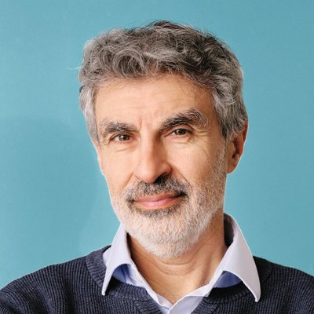
Mila · LawZero · UdeM
Turing Award laureate, professor at Université de Montréal, founder and scientific advisor of Mila, and president of LawZero. Recent work focuses on AI safety — managing the risks of advanced AI systems and how language models can safely acquire, store, and act on knowledge.
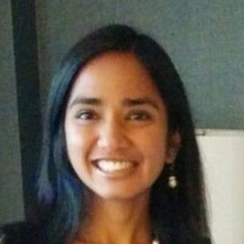
Reflection AI · Stanford
Researcher at Reflection AI and adjunct professor at Stanford; Program Chair for MLSys 2026. Technical lead on PaLM (540B) and lead contributor to Gemini pre-training at Google; now building open-weight agentic and autonomous coding models.
MIT EECS · CSAIL
Assistant professor at MIT EECS / CSAIL; PhD from Stanford. Creator of ColBERT (late-interaction neural retrieval) and DSPy (a programming framework for LM pipelines). His research directly addresses how external knowledge is retrieved, compressed, and fed into the language-model context.
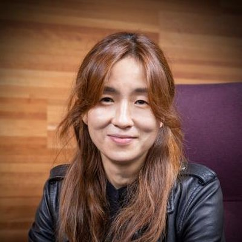
Stanford · NVIDIA Research
Dieter Schwarz Foundation Professor at Stanford CS, senior fellow at Stanford HAI, and senior director of AI Research at NVIDIA. MacArthur Fellow (2022) and TIME100 AI (2023); foundational work on commonsense reasoning, neuro-symbolic NLP, and language generation.
CMU · Cartesia AI
Assistant professor of ML at CMU and co-founder / chief scientist of Cartesia AI; PhD from Stanford. Lead author of the S4 and Mamba state-space-model papers, foundational to how context can be compressed and managed beyond the transformer paradigm. TIME100 AI (2024).
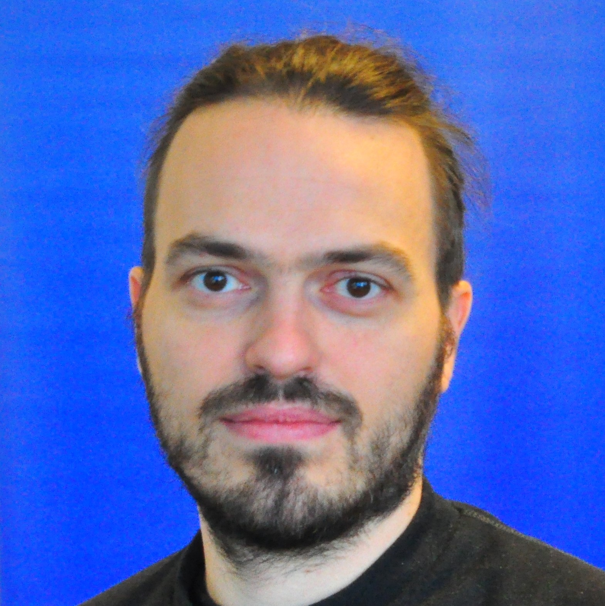
Microsoft Research · Mila
Principal researcher at Microsoft Research Montréal and associate member at Mila; PhD from UdeM. Works on language models, reasoning, and learning algorithms for modular and compositional generalization — including work on context efficiency, in-context learning, and chain-of-thought.
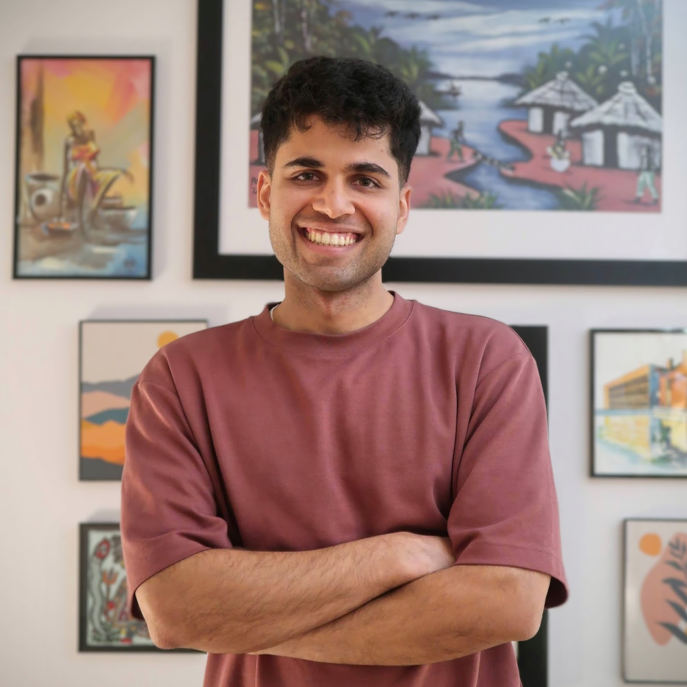
Periodic Labs · McGill
Founding member at Periodic Labs and adjunct professor at McGill; previously a staff research scientist at Google DeepMind, with a PhD from Mila. Core contributor to the Gemma and Gemini models and creator of on-policy distillation for LLMs; NeurIPS outstanding paper award for rigorous evaluation in reinforcement learning. His work on distillation and RL post-training bears directly on how knowledge is internalized into model weights rather than retrieved at inference.
We welcome submissions across the full spectrum of context management in language models, including but not limited to:
Each submission will receive at least two reviews. The process is double-blind: author identities and affiliations must be removed from the manuscript, and citations to the authors' own prior work should be anonymized where they would otherwise reveal identity. Organizers will not review papers for which they have a conflict of interest. Accepted work will be presented as contributed talks or posters, with oral slots selected to ensure strong representation of junior researchers.
We rely on submitting authors to share the reviewing load. By submitting, at least one author per paper commits to serving as a reviewer for the workshop if asked by the Program Chairs. The OpenReview submission form asks for the profile of the committing author. Failure to fulfill this commitment may result in desk-rejection of the submission.
We are recruiting reviewers from the broader community. If you work on long-context modeling, retrieval, efficient architectures, continual or test-time training, agentic memory, or evaluation, we would be grateful for your help. Reviewing runs between the submission deadline and notifications, and no reviewer is assigned more than five papers. To volunteer, fill out the reviewer sign-up form.
Concurrent submission to other venues is allowed. Because this workshop is non-archival, accepting a paper here does not preclude its later publication elsewhere, and authors are not required to withdraw the paper from other concurrent review processes.
All authors, reviewers, and attendees are expected to adhere to the COLM Code of Conduct.
The OpenReview submission portal is open until June 22, 2026.
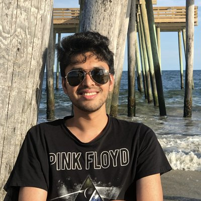
Siddarth Venkatraman
Mistral · Mila
Research intern at Mistral; PhD student at Mila / UdeM co-advised by Glen Berseth and Nikolay Malkin. Works on RL, probabilistic inference, and generative models, with current focus on LLM post-training and inference scaling.
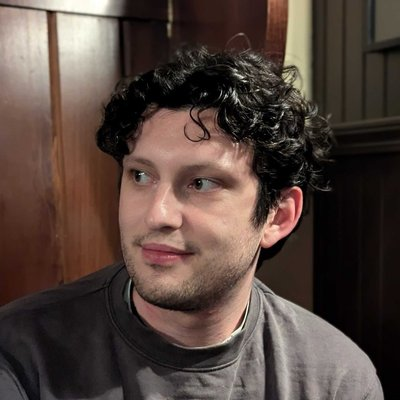
Dane Malenfant
McGill · Mila
MSc student at McGill / Mila supervised by Blake Richards in the LiNC Lab; citizen of the Métis Nation–Saskatchewan. Researches cooperative multi-agent systems, credit assignment, and neuro-inspired algorithms.
Emiliano Penaloza
Microsoft · Mila
Research intern at Microsoft; PhD student at UdeM / Mila supervised by Laurent Charlin. Recent work on RL post-training for long-horizon agentic tasks.
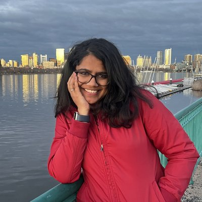
Sharut Gupta
MIT CSAIL
PhD candidate at MIT CSAIL advised by Phillip Isola and Stefanie Jegelka. Researches self-supervised and contrastive representation learning, with focus on representations that adapt across distribution shifts; previously at Google DeepMind and Meta FAIR.
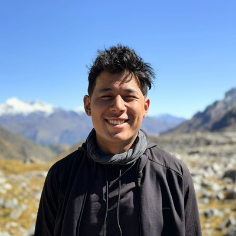
Anthropic (Astra Fellow) · UdeM · Mila
Astra Fellow at Anthropic and PhD student at UdeM / Mila. Research focuses on language model agents, long-context reasoning, and post-training.
Benjamin Therien
Mila · UdeM
PhD student at UdeM / Mila co-advised by Irina Rish and Eugene Belilovsky. Researches distributed optimization, hyperparameter transfer, and continual pre-training; previously at Meta FAIR and UWaterloo.
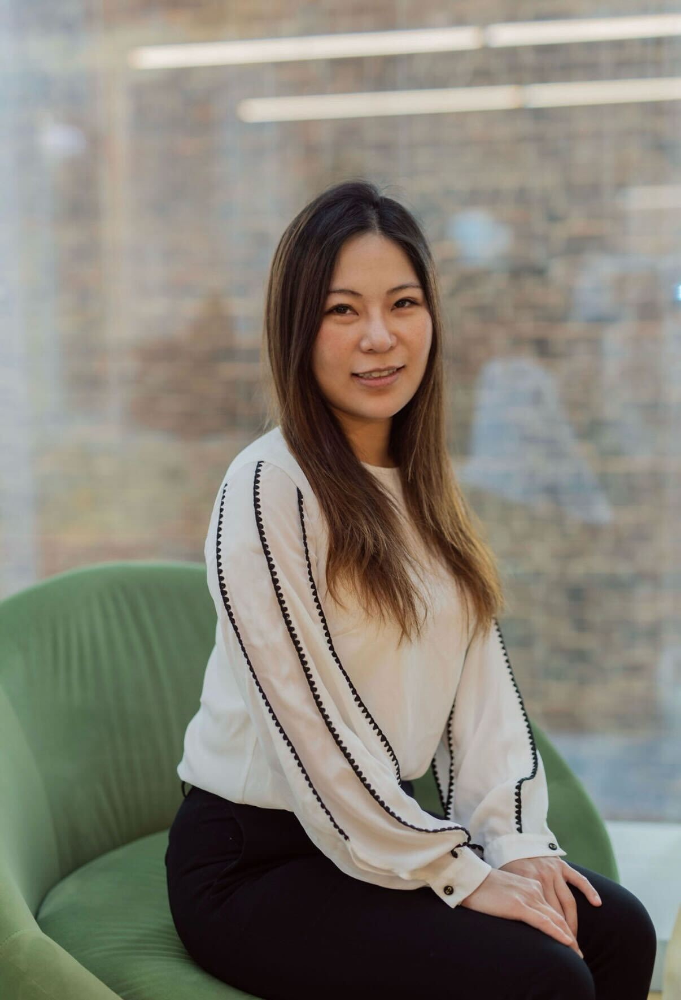
Alicia Sun
Reflection AI
Researcher at Reflection AI, working on the systems and training infrastructure behind long-context language models.
Mila · UdeM · Google Research
Associate professor at UdeM and core member of Mila; Canada CIFAR AI Chair and Canada Research Chair in Neural Computation. Works on mechanisms of intelligence common to biological and artificial systems via dynamical systems and information theory.
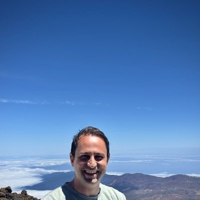
Martin Klissarov
Google DeepMind · McGill · Mila
Research scientist at Google DeepMind finishing his PhD at McGill / Mila under Doina Precup and Marlos Machado. Works on RL and LLM agents — intrinsic motivation, meta-learning, and self-directed learning drives.
Princeton CS · Thinking Machines
Associate professor at Princeton (on sabbatical at Thinking Machines Lab) co-leading the Princeton NLP Group. Research spans the full LM life cycle — pre-training, alignment, retrieval, and efficient deployment.
Email the organizers.
For submission questions, sponsorship enquiries, accessibility requests, or anything else.